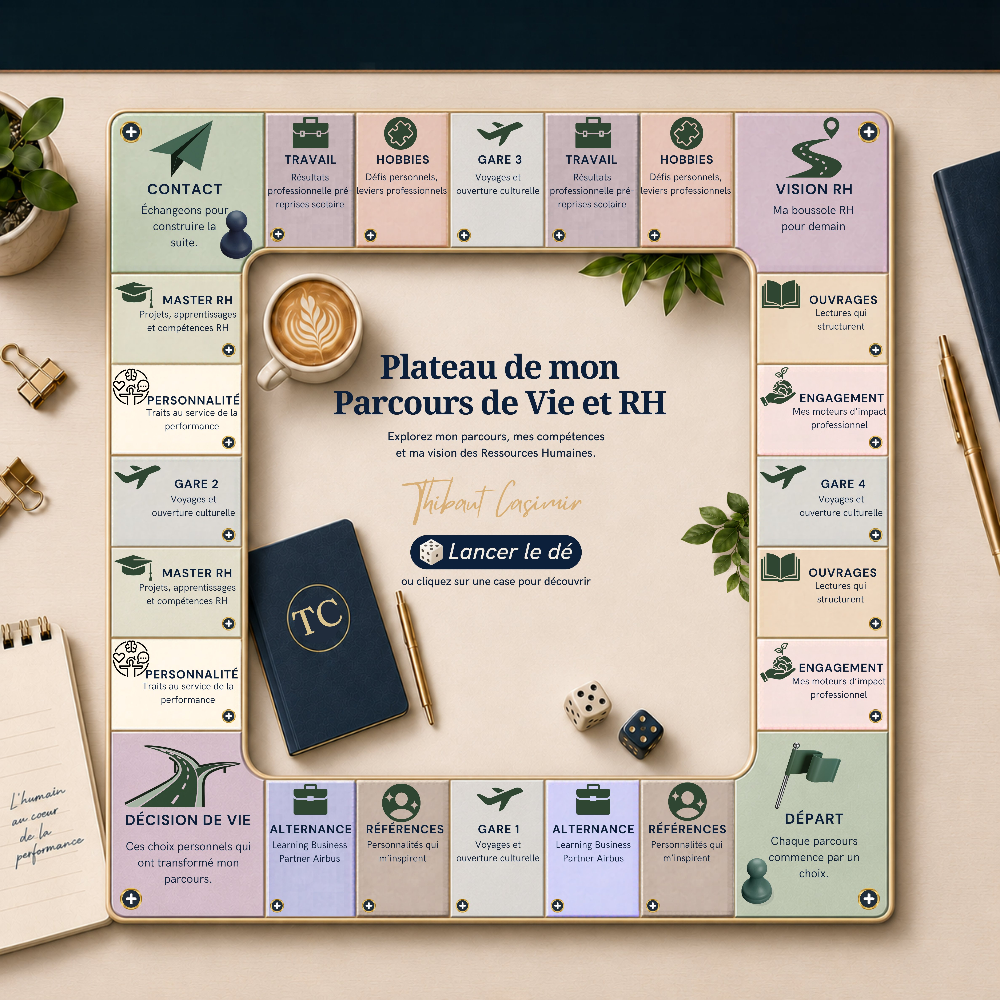

Click a square · Roll the die · Explore
Roll the die to move square by square and automatically discover my journey. Or click directly on any square of the board to explore it freely. Each square opens a card with the details of that step.
Because a traditional CV does not capture a trajectory. This board is an invitation to actively explore my journey: the choices, learning experiences, influences and vision that guide my Human Resources practice.
